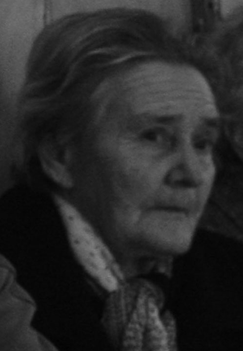

Aktualności 2022
Wydarzenia i informacje
Jeżeli ktoś ma ochotę zapoznać się z krótką opowieścią związaną z Kopysnem, wystarczy kliknąć na link
Kopysno w opowieści - część I
Zapraszamy do obejrzenia filmu autorstwa Tatiany Iwanickiej o Kopysnie - Kopysno
Uruchomiliśmy nową stronę Kopysna. Zapewne zawiera
niedociągnięcia i błędy, prosimy więc o cierpliwość.
Wszyscy, którzy choć raz stanęli na szczycie Kopystanki
przyznają, że rozciąga się z niej wspaniały widok na okolicę.
Niejeden z nas próbował rozpoznać obiekty znajdujące się w
oddali kilkunastu kilometrów i zapewne bez przeszkód zauważył
na przykład wiatraki z farmy wiatrowej Hnatkowice-Orzechowce.
Jako ciekawostkę podam, iż z Kopystanki widać prawosławny
Monaster Świętych Cyryla i Metodego w Ujkowicach, oddalony ok.
18 km od szczytu góry. Informację tę pozyskaliśmy ze
strony www.monasterujkowice.pl.
Gwoli wyjaśnienia, Kopysno to siedziba rodu Kopystyńskich
(Kopysteńskich), których wybitnym przedstawicielem był
prawosławny władyka (biskup) Michał Kopystyński, przeciwnik
Unii brzeskiej, która spowodowała połączenie Cerkwi
prawosławnej z Kościołem łacińskim w Rzeczypospolitej Obojga
Narodów, co miało miejsce w Brześciu Litewskim w 1596 roku.
Warto zajrzeć na stronę internetową Monasteru Ujkowice, a
zwłaszcza do zakładki Galeria, gdzie zgromadzono wiele
ciekawych fotografii ukazujących piękno przyrody, nie
wspominając o innych dokumentujących pełen podziwu zapał,
pracowitość i artyzm mieszkańców Monasteru, którzy stworzyli
tak piękne miejsce.
Z przykrością informujemy, że 16 czerwca 2022 r. zmarła Stefania Krupa, żona wujka Mikola, przebywając na tym świecie ponad 90 lat. Jesteśmy pewni, że pojawi się w stosownym czasie, na który wszyscy czekamy, by jak zwykle swoim zwyczajem nie wypuścić z domu gości bez posiłku.

Pragniemy przeprosić oczekujących na kontynuację historii oszusta z Kopysna w wersji wideo. Zrezygnowaliśmy z dalszej produkcji krótkich filmów z uwagi na to, iż historia tego człowieka jest pełna tak wielu intrygujących wątków, że wykraczają poza tę formę przekazu. Postanowiliśmy opisać jego historię i możemy już dziś poinformować, że na ukończeniu jest jego biografia. Czekamy jeszcze na pewne archiwalne dokumenty i po zapoznaniu się z nimi, chcemy tę fascynującą opowieść o człowieku urodzonym w Kopysnie, przedstawić publicznie. Nasz bohater wykorzystując m.in. sfałszowane pisma rodziny cesarskiej, w tym samego Franciszka Józefa I, zapewniał sobie przez lata pracę w jednym z c.k. urzędów w Wiedniu. Jego oszustwa pewnie nie wyszłyby na światło dzienne, gdyby podczas próby awansu na kolejne, wyższe stanowisko w tym urzędzie, wcielając się w szambelana dworu cesarskiego nie zareklamował samego siebie jako właściwą osobę na wolne stanowisko, czego miał rzekomo sobie życzyć sam Franciszek Józef I. To oczywiście tylko wycinek jego „bogatej” historii. Więcej o Walerianie Pełce, uczniu Gimnazjum w Bochni i Zakładu Filozoficznego w Przemyślu, pochowanego ok. 200 m od grobu Ludwika van Beethovena w Wiedniu - w biografii, która mamy nadzieję ukaże się w słusznym czasie.

Projektowana okładka publikacji
Projektowana okładka publikacji